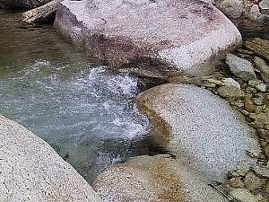
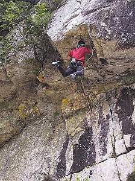

小川山キャンプ | ０１’８／１８−１９ |
 | 行って来ました！ 夏の小川山！！ 小川山とは、このコーナーでも以前から紹介していますが、長野県上川村にある、キャンプ場（正式名は廻目平キャンプ場）の通称。日本のヨセミテとも言われている景色の美しいところである。標高は高く、山荘前で海抜１６００ｍ。暑い夏の避暑地としては、なかなかＧｏｏｄ！な、ところです。 さて、左の写真は、キャンプ場から見える山を撮ったものですが、周辺の山々はこんな感じに、ゴツゴツと岩肌があらわになっています。この写真、つぶれて見えないけど、一番上の岩に人が張り付いているのが写っています。（大きい写真だとわかるんだけど・・） そーです、小川山とはクライマーが集まるところなのです。 |
| 当然キッカーは、クライミングに行ったとして、今回のメンバーは私（べっしー）と、らくさん（最近らくべーに変わったという噂が・・・）の３人。いけなくなってしまった、むらべーさん残念でした。 と、何にせよ、私はマウンテンバイクを持っていって、周辺を散歩。ここら辺、坂が多くて（しかも一方向の坂）大変！。それでも自然の中で、楽しく乗ってました。 近くに川も流れており、これがとても透き通っていて綺麗です。（写真下）フライフィッシングをやっている人もいました。 |  |
|  | らくさんはというと、一人で金峰山へ。金峰山はこのキャンプ場からもいける、日本百名山の一つ。山頂の景色はとてもすばらしく、多くの人が訪れます。 し・か・し、このキャンプ場行くには、ちょっとハード。長い距離と急勾配の道を、４時間ぐらい歩かなければならず、しかも途中の景色はあまりおもしろくなく、頼みの綱は山頂の景色だけ。 もちろん、らくさんそんなこと百も承知で？霧がかかる中、雲の渦巻く山頂目指して行って来ました。う〜〜ん、さすが！ |
夜はテントサイドで宴会。おいしい夕食とビールでご機嫌です。ホントはココに夕食の写真でもあればいいのですが、いつもながら食べた後に写真撮ってないことに気づくんだよね。ヤレヤレ・・・・ キッカーは写真右のように、クライミングに専念。いま、オーバーハングしている岩にしがみついている最中です。わかるかな？（足が宙ぶらりん〜♪） ちなみにキッカーは、この１週間盆休みで、ずーとクライミングをしていたんです。 涼しい涼しい小川山で、いい休日過ごせましたよ。 |  |